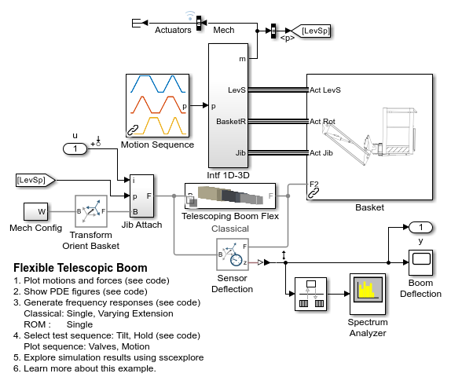
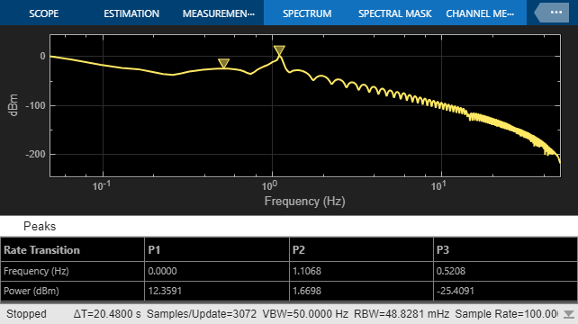
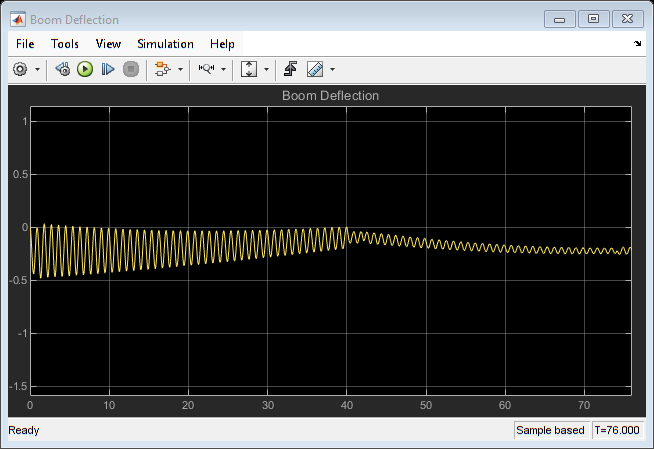
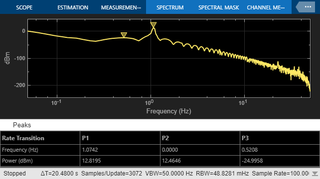
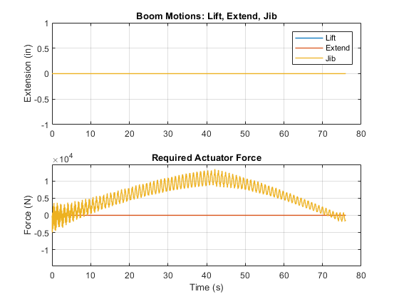

Flexible Telescoping Boom
This example models the telescoping boom of a boom lift with flexible bodies. The flexible bodies are modeled both using classical beam theory and reduced order models as exported from finite element tools. The model is used to identify natural frequencies at different levels of boom extension.
Contents
Model
Telescoping Flexible Boom
The flexible boom is modeled using two methods - classical beam theory and reduced order models.
For each method, the beam has three nested segments.
The Flexible Rectangular Beam Block ("Middle Beam" block in the image below) uses classical beam theory to model the flexible portion of the beam. The overlapping section of the nested beams is assumed to be rigid.
In the ROM variant, the "Middle Beam" block is replaced with a Reduced Order Flexible Solid block which uses stiffness and damping matrices to model the flexible body behavior
Simulation Results: Tilt Sequence, Classical
The plot below shows a test sequence designed to tilt the boom. We apply this sequence to the model with the classical flexible beam.
 Motion of the lift, extend, and jib actuators along with applied actuator force.

Simulation Results: Tilt Sequence, ROM
The plot below shows a test sequence designed to tilt the boom. We apply this sequence to the model with the ROM flexible beam.
Motion of the lift, extend, and jib actuators along with applied actuator force.
Simulation Results: Frequency Response, Varying Extension
The plot below shows the variation in frequency response.
Warning: Using find_system without the 'Variants' argument skips inactive Variant Subsystem blocks in the search. This behavior will change in a future release to look at all choices of the Variant Subsystem. To find blocks that are active in simulation or code generation, compile the model and use the built-in variant filters with the 'MatchFilter' option. To find all blocks use filter '@Simulink.match.allVariants' with the 'MatchFilter' option. Extension level 1: 0.05 Extension level 2: 0.1 Extension level 3: 0.15 Extension level 4: 0.2 Extension level 5: 0.25 Extension level 6: 0.3 Extension level 7: 0.35